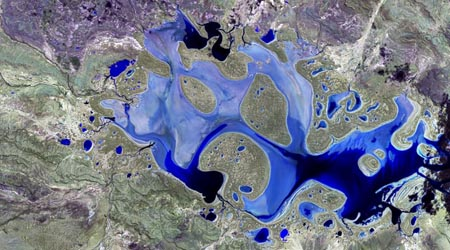
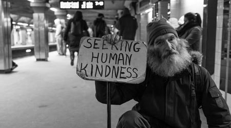

Enabling Community Climate Action and Local-Federal Intelligence Transmission
Ellie Young, Stan Ahalt, Ashley Atkins, Brian Blanton, Chris Bizon, Johannes Friedrich, Jose Fortes, Matt Gee, Bandana Kar, SJ Klein, Chris Lenhardt, Ryan McGranaghan, Jorrit Poelen, Douglas Rao, Lilit Yeghiazarian, Ilya Zaslavsky
We propose building a multi-faceted decision-support system to deliver coherent climate data for local community residents and decision makers to manage community infrastructure, health, equity, biodiversity, resilience, and so forth. To deliver a complete support package for local change initiatives, we propose to augment this software system with a connected ecosystem of data providers and experts, enabling collaborative communications between cross-sector groups.

Homelessness knowledge network for cities
Jan Aasman, Ying Ding, Tim Goliver, Dina Hooshyar (VA), Sam Klein, Sarah E, Eric Jahn, Sonia Kim, William Snow (HUD)
We propose an OKN of real-time data tracking homelessness, available housing, usage of shelter and social services, and related funding and programs. This will help city and community leaders to house every citizen and prevent future homelessness, with visibility into how their city is doing, and the dynamic flows maintaining that equilibrium.
Electronic consent services to be used as a common mechanism to manage privacy preferences and consent assertions across ontology-driven systems
Brian Handspicker, Eric Jahn, Esther Jackson, Katerine Osatuke, Kenneth Berkowitz, Luis Amaral, Paul Wormeli, Noam Arzt, Camille Nebeker, Cori Thompson (Drummond Group) Jim Pasquale (Kantara), Kristine McCoy
We propose building an electronic consent service to be used as a common mechanism to manage privacy preferences and consent assertions for protection of personal and/or sensitive information that is requested to be shared between ontology-driven systems. This service will achieve improved availability and appropriate protection of sensitive information (which may otherwise be withheld due to law, regulation, policy, procedure, or simply uncertainty by those holding that information).